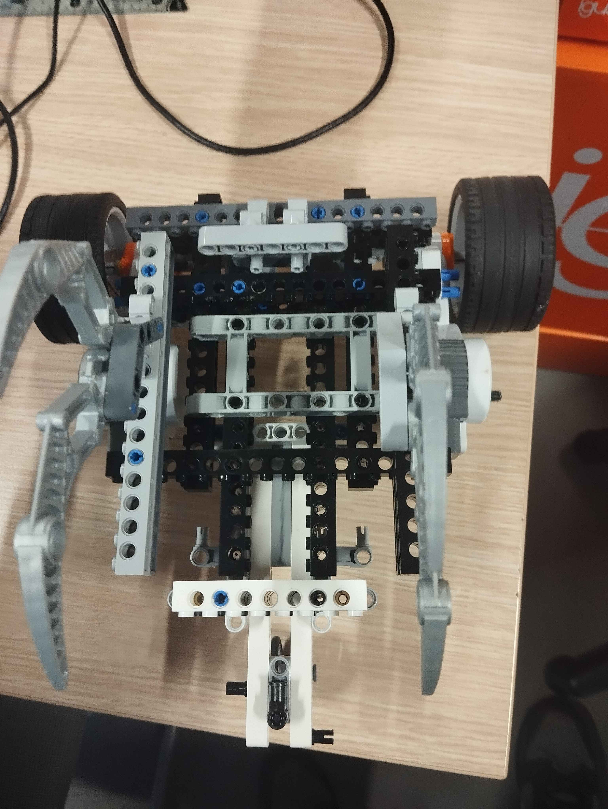

Mon cursus à l'ENSIBS
Je suis actuellement en première année de prépa intégrée à l'École Nationale Supérieure d’Ingénieurs de Bretagne Sud.
Durant cette première année, nous avons été amenés à réaliser différents projets, comme la construction d'un robot en briques NXT et en Lego, mais aussi à découvrir différents langages de programmation (C, Python, SQL, HTML, NXC).
Je vais donc vous présenter ces projets. Nous avons aussi des cours de maths nous permettant d'acquérir des bases solides utiles dans toutes les matières.
Je souhaite me spécialiser plus tard en mécatronique, un domaine qui combine mécanique, électronique et informatique. Cette spécialisation pourrait me permettre de travailler pour l'armée ou les pompiers par la suite.
Projet Robotique
Dans le cadre de ce deuxième semestre à l'ENSIBS, nous devons réaliser un projet qui consiste en la création d'un robot en utilisant des briques NXT (brique de commande programmable, capteurs divers) et des briques Lego classiques.
Ce robot sera mis en situation pour le sauvetage d'une personne repérée grâce à une fusée de détresse. En réalité, elle sera représentée par une lampe située à 30 cm du sol. Le robot devra donc retrouver la "victime" tout en esquivant les obstacles sur son chemin (des briques ajourées).
Ce projet m'intéresse énormément car il combine parfaitement mon envie de devenir ingénieur en mécatronique avec ma passion du sauvetage (développée sur une autre page).
Voici donc un exemple de structures de robot NXT :
Projets Codage
Dans notre cursus de prépa intégrée à l'ENSIBS, nous sommes régulièrement amenés à manipuler différents langages de code. En l'occurrence, nous avons déjà eu l'occasion de travailler sur les langages C, Python, NXC (pour le robot), SQL et HTML.
Nous sommes donc en mesure d'en apprendre davantage sur chacun de ces langages afin de
nous améliorer dans ceux-ci.
Nous sommes capables de créer des programmes rudimentaires mais essentiels en Python et en C.
Nous sommes aussi capables de manipuler des bases de données grâce au SQL.
Conclusion
Notre parcours à l'ENSIBS nous permet d'avoir des rudiments cruciaux dans beaucoup de matières scientifiques et informatiques. La suite de nos études va nous permettre de renforcer ces bases afin d'être prêts au monde de l'alternance.
En savoir plus sur l'ENSIBS
Site Web de l'ENSIBS :